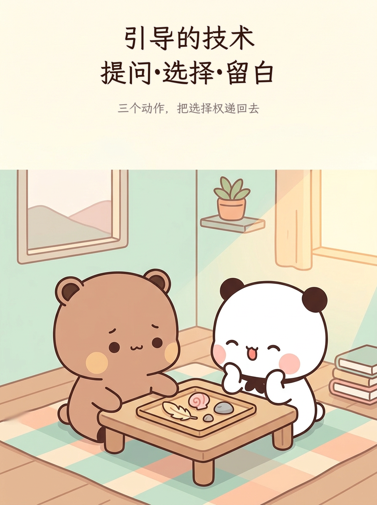
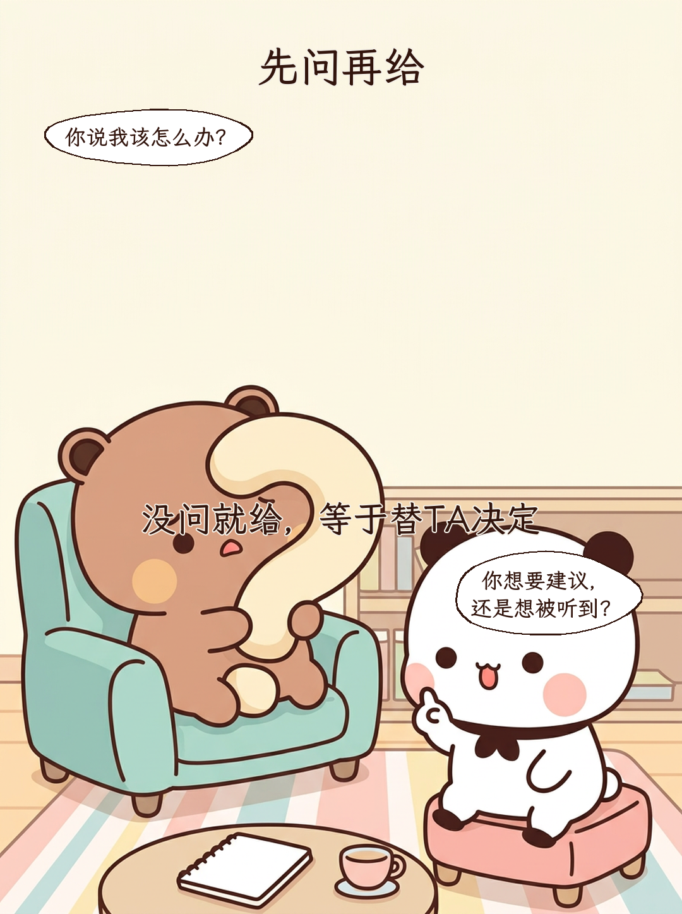
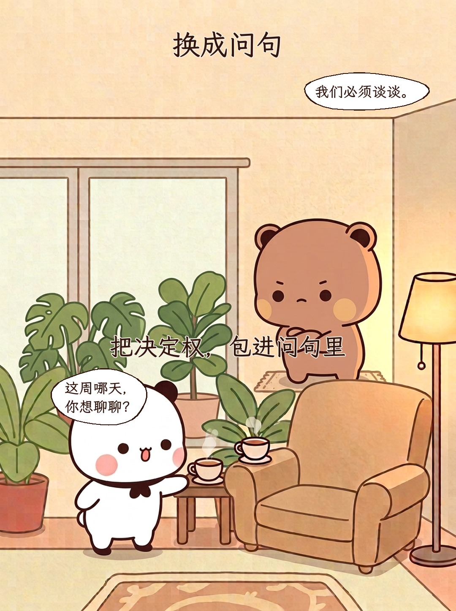
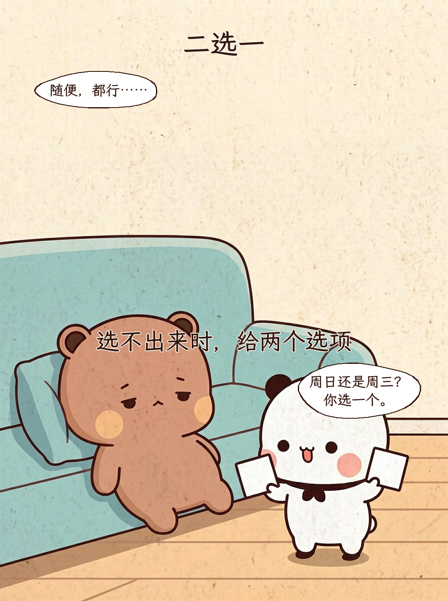
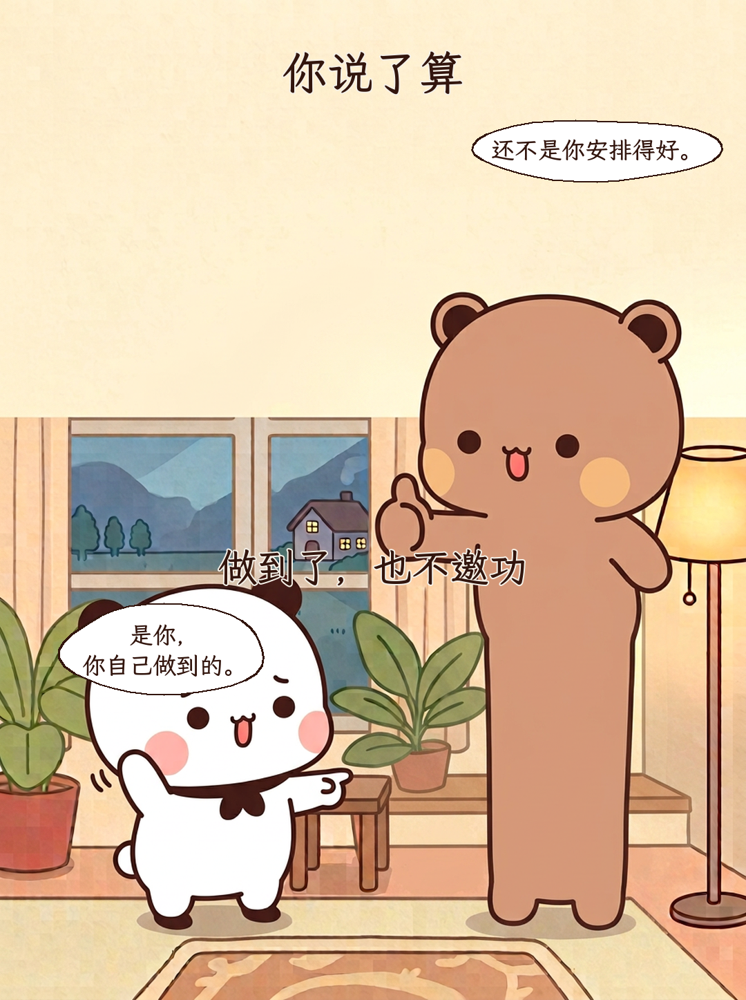
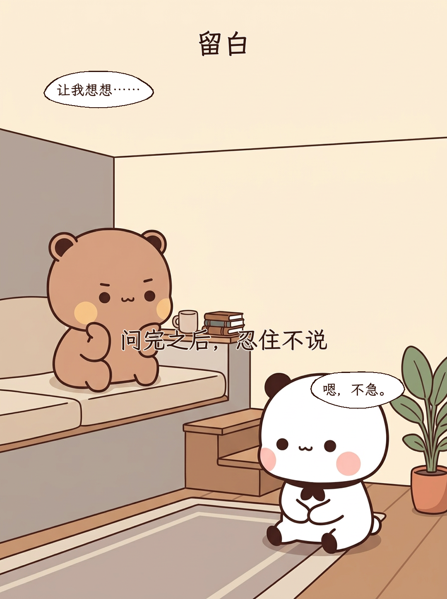
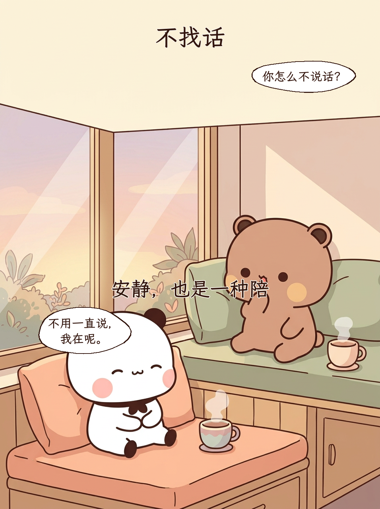
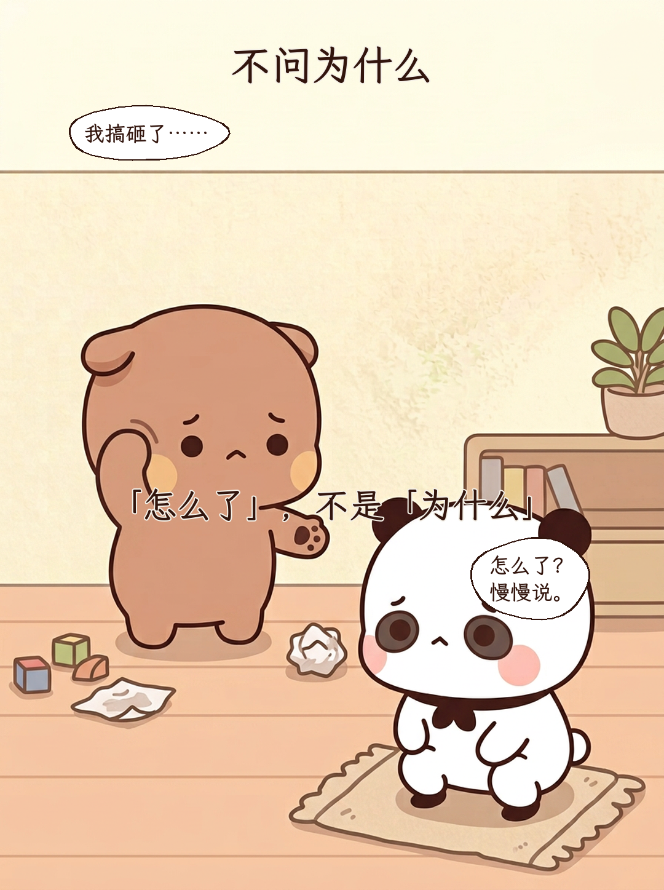
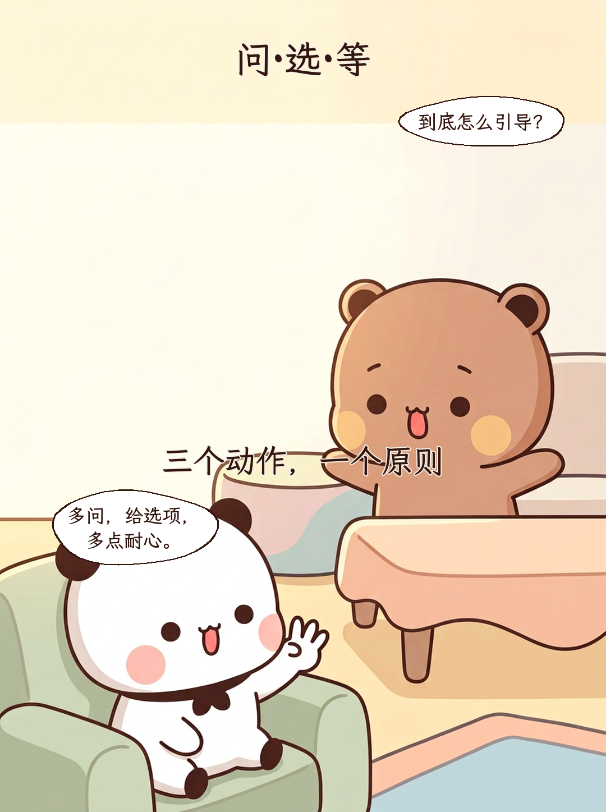
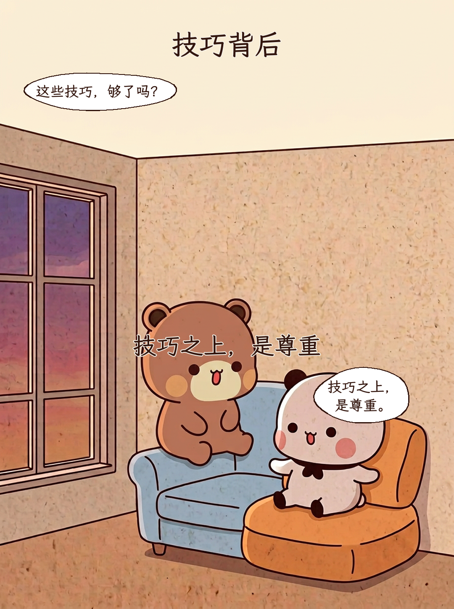

引导的技术 提问·选择·留白
三个动作，把选择权递回去

先问再给
没问就给，等于替TA决定
你说我该怎么办？ / 你想要建议， 还是想被听到？
换成问句
把决定权，包进问句里
我们必须谈谈。 / 这周哪天， 你想聊聊？
二选一
选不出来时，给两个选项
随便，都行…… / 周日还是周三？ 你选一个。
你说了算
做到了，也不邀功
还不是你安排得好。 / 是你， 你自己做到的。
留白
问完之后，忍住不说
让我想想…… / 嗯，不急。
不找话
安静，也是一种陪
你怎么不说话？ / 不用一直说， 我在呢。
不问为什么
「怎么了」，不是「为什么」
我搞砸了…… / 怎么了？ 慢慢说。
问·选·等
三个动作，一个原则
到底怎么引导？ / 多问，给选项， 多点耐心。
技巧背后
技巧之上，是尊重
这些技巧，够了吗？ / 技巧之上， 是尊重。